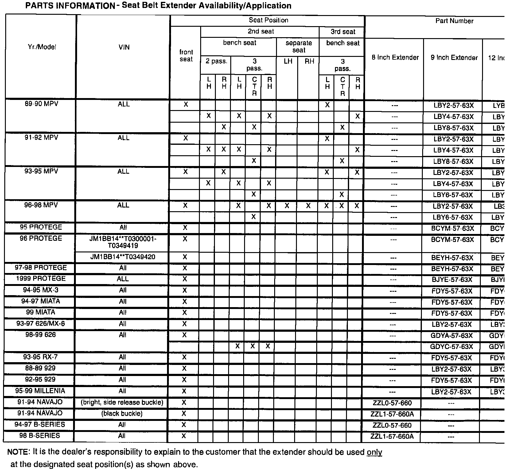

Seat Belt - Extenders
Bulletin No. 005/98Issued 04/22/98
Revised
Category
S (08)
Applicable Model/s
See Below
Subject
SEAT BELT EXTENDERS
BULLETIN REVISION NOTE
^ The PART(S) INFORMATION section of this bulletin has been corrected and revised to include 1999 models.
AFFECTED MODELS
See Parts Information
DESCRIPTION
If a fully extended seat belt will not reach across the lap of the vehicle occupant, a seat belt extender may be avail able which can lengthened a seat belt by 8, 9 or 12 inches. Refer to the Parts Information on page two for applicable models and available lengths.
The following "Warning Label" is affixed to the seat belt extender. The proper usage and safety related warnings listed on the extender must be explained to the customer when the extender is delivered.
It is also the dealer's responsibility to explain the following Owners Manual warning information to the customer:
Warning
^ Using a seat belt extender when not necessary is dangerous. The seat belt will be too long and not fit properly. In an accident, the seat belt will not provide adequate protection and you (customer) could be seriously injured. Only use the extender when it is required to fasten the seat belt properly.
^ Using an extender that is too long is dangerous. The seat belt will not fit properly. In an accident, the seat belt will not provide adequate protection and you could be seriously injured. Do not use the seat belt extender or choose one shorter in length if the distance between the extender's buckle and the center of the user's body is less than 6 inches.
^ Using a seat belt extender that is for another person or a different vehicle or seat is dangerous. The seat belt will not provide adequate protection and the user can be seriously injured in an accident. Only use the extender provided for you and for the particular vehicle and seat. Never use an extender in a different vehicle or seat.
���g:

PARTS INFORMATION
(See table)
WARRANTY INFORMATION
Warranty Type A
Symptom Code 99
Damage Code 99
Part Number Main Cause Refer to Parts Information
Quantity 1
Operation Number N/A
Labor Hours N/A